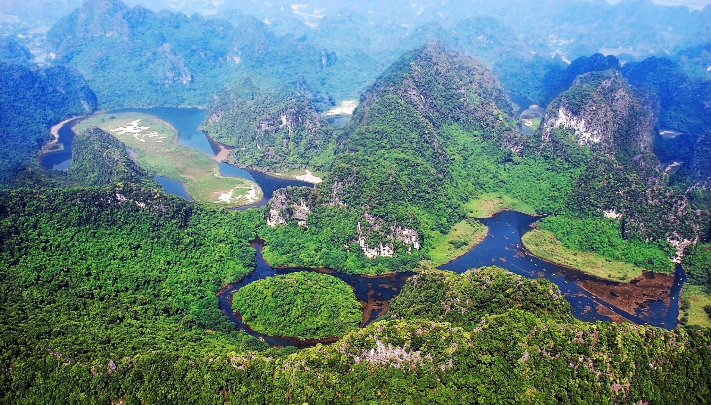
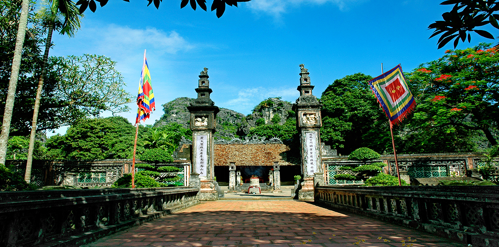
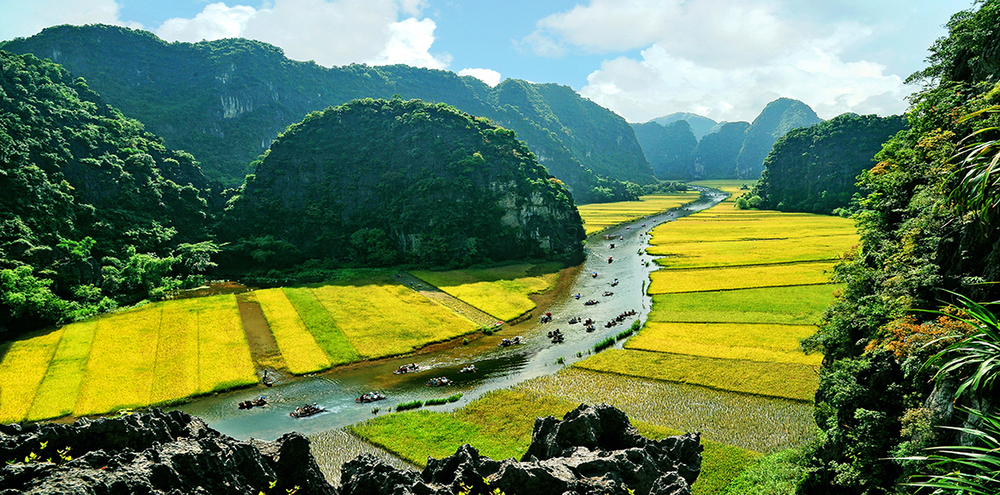

關於長安 – 寧平
長安 – 世界自然與文化遺產
長安風景綜合體是越南最著名的旅遊景點之一，位於寧平省，距離河內約90公里南方。擁有石灰岩山脈的壯麗美景、天然洞穴系統和全年的碧水，讓莊安被比擬為「陸地上的夏龍灣」。
2014年，長安被聯合國教科文組織認定為世界文化與自然遺產，成為越南首個雙重文化遺產。這裡不僅是重要的旅遊景點，也具有重要的歷史、文化及考古價值。

長安的卓越美景
長安最特別的特色是蜿蜒於數百萬年歷史石灰岩山脈之間的河流系統。遊客可搭船探索自然洞穴，如明亮洞、暗洞、釀酒洞或帝靈洞。每個洞穴全年都帶有神秘且清涼的美景。
除了自然景觀外，莊安還有許多寺廟和神聖的歷史文物，營造出既詩意又古老的空間。這裡曾是著名電影《金剛：骷髏島》的拍攝地。

杜祿長安
長安旅遊適合許多人，如家庭、情侶、國際遊客或自然愛好者。來到這裡，遊客可以體驗：
- 搭船遊覽洞穴
- 報到：杭穆阿與譚科克
- 參觀白定寶塔
- 騎自行車探索北方鄉村
- 在生態度假村放鬆
- 在寧平享用山羊與接骨木莓的特色美食
前往長安最美的旅遊時段是每年一月至六月，尤其是潭谷的成熟稻季，造就了極為壯觀的景色。

